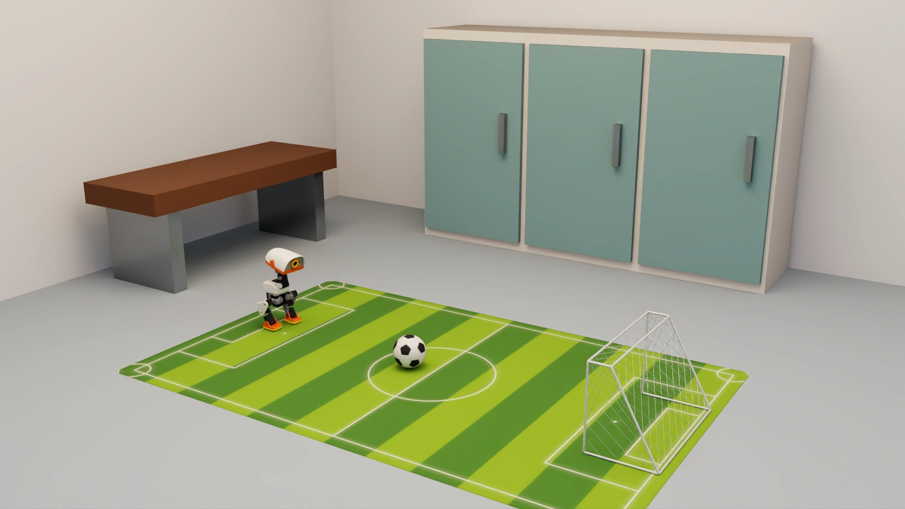

5.3 Beyond the pitch#
Section 5.2 used one green pitch. Extend surfaces, lighting and layouts while checking whether action labels remain valid.
Stabilize the task, then vary environments#
A fixed pitch helps diagnose failures, but a model may rely on shortcuts such as “white spots on green ground.” Real exposure, reflections and friction vary, creating a sim-to-real gap. These six scenes illustrate conditions to cover.
Striped pitch

Plain pitch - midday sunlight

Light reflective marble floor - indoor daylight

Wooden floor - indoor neutral-white LED lighting

Living room - indoor sunset light

Indoor activity room - bright nighttime lighting


Static illustrations with physically scaled rooms, furniture, robot and pitch; shooting has not been validated in these environments.
What to randomize and recapture#
Domain randomization follows Sections 3.3 and 3.4: vary conditions within the intended operating range. Expand starts and headings first, then visual conditions and room layouts. Reserve unseen combinations and boundary cases for testing.
Change |
Data treatment |
|---|---|
Lighting, textures, background |
Reuse labels only for appearance changes that preserve geometry and required actions |
Starts, ball positions, camera mounting |
Recheck geometry and alignment; changed starts require new trajectories |
Friction, mass, contact, obstacles |
Run physics again and collect actions suited to the new conditions |
Failure to find the ball calls for visual coverage; drifting despite seeing it calls for correction demonstrations; instability on new surfaces calls for skill evaluation. More backgrounds cannot replace new action experience.
Another option: predict 14 joint targets directly#
Swipe horizontally to see the full diagram
1Observation and instruction
Redesign state and action labels.
2GR00T
Learn balance and coordination from demonstrations too.
314 joint targets
Bypass walking and kicking policies.
4Joint controller
Retain rate limits, error handling and timeout protection.
This removes the skill layer, not a previously required IK step: our hierarchical implementation already has no explicit IK or inverse-dynamics solver. Against a pipeline that converts foot poses to angles through IK, direct angle prediction would remove that geometric solve.
Joint targets still require servo control; they are not torque or current commands. Potentially freer motion comes with greater demands for balance/recovery demonstrations, inference timing, action continuity and contact validation.
Cosmos 3: add visual variation#
NVIDIA Cosmos is a world foundation model platform for physical AI. One research direction uses Cosmos 3 generative models for video transfer: edges, depth or segmentation constrain structure, while text specifies lighting and materials.
Swipe horizontally to see the full diagram
1Original demonstration
Start with correct source data.
2Cosmos 3 transfer
Conditioning does not guarantee correct generated frames.
3Consistency checks
Preserve ball, goal, body and camera relations plus temporal continuity.
4Controlled evaluation
Compare with and without generated data at fixed demonstration volume and training budget.
Reuse state and eight-dimensional requests only when appearance changes preserve action meaning. GR00T's four history frames span about 5.8 seconds, so generated frames must remain consistent. Video generation does not recompute friction or contact: a more slippery surface requires new physical trajectories, not just new pictures.
Check your understanding
Do ten backgrounds for one action sequence provide ten times as much action experience?
Show explanation
No. Visual coverage grows, but action and state coverage do not. Corrections, detours and surface adaptation need new demonstrations.
Section 6.1 turns the task, inputs, actions and validation into a new-task plan an agent can help implement.